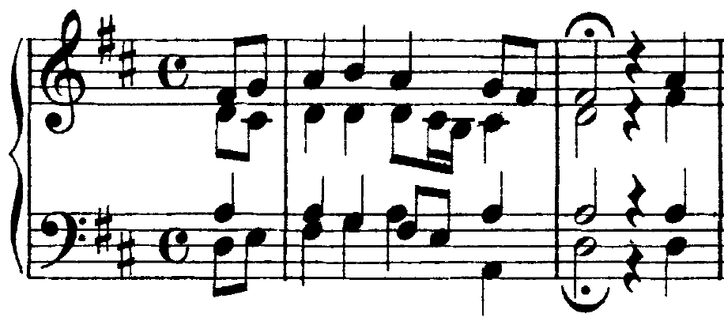
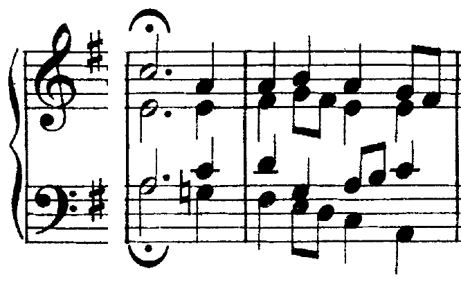
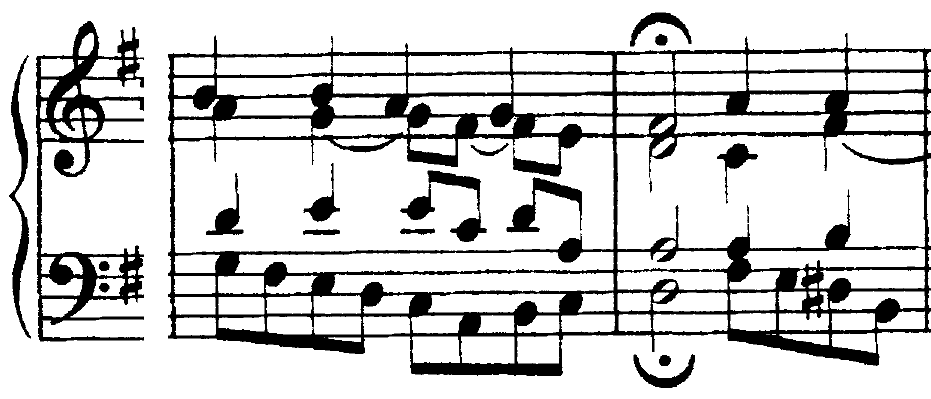

La sensibile, la quinta o la settima al basso: tre modi di far camminare il basso dentro la dominante, ciascuno con la sua risoluzione.
A differenza dello stato fondamentale, nei suoi tre rivolti la settima di dominante si trova sempre nella forma completa.
Carlo Marenco, Manuale d’armonia, p. 75
C11La settima di dominante, pp. 302–303
Sezione C, unità 11, lezione 33: i rivolti si chiamano «quinta e sesta (primo rivolto), terza e quarta (secondo rivolto), seconda e quarta (terzo rivolto)» (p. 302).
Un rivolto della V⁷ ha al basso la terza, la quinta o la settima. Nei rivolti l’accordo è sempre completo e risolve sulla tonica completa (Marenco, p. 75). Primo rivolto: «la terza (al basso) sale alla tonica, la fondamentale rimane legata, la quinta ha movimento libero e la settima scende» (p. 75). Secondo rivolto: la quinta al basso «può salire di grado al I⁶ […] o scendere al I» (p. 76). Terzo rivolto: «la settima è al basso. Dovendo la dissonanza scendere di grado, la risoluzione avviene sempre su I⁶» (p. 77).
| rivolto | al basso (in re) | cifra | il basso nella risoluzione |
|---|---|---|---|
| primo | la terza, sensibile (do♯) | V⁶₅ | sale di semitono: I |
| secondo | la quinta (mi) | V⁴₃ | sale al I⁶ o scende al I |
| terzo | la settima (sol) | V⁴₂ (o V₂) | scende di grado: I⁶ |
Nel periodo in re maggiore il basso si muove quasi sempre per grado, e la dominante lo segue con il rivolto adatto. B. 1: re–do♯–re, V⁶₅ fra due tonici (il la del contralto resta, il sol del soprano scende). Bb. 2–3: re–mi–fa♯, I–V⁴₃–I⁶: la settima del soprano scende al fa♯ e raddoppia il basso, la terza del I⁶. Bb. 3–4: fa♯–sol–fa♯, I⁶–V⁴₂–I⁶: la settima è al basso e scende. Alla b. 5 la V⁷ completa dopo la 6/4; alla b. 6 il V⁴₃ scende al I (mi–re), alla b. 7 il V⁶₅ porta alla chiusa.
Trattare il V⁴₂ come un V qualunque e portare il basso alla fondamentale della tonica: il sol salta al re e la settima non si scioglie. Con la settima al basso, il basso scende di grado al fa♯: I⁶.
Il corale guida dell’unità comincia con un V⁴₃. Nel levare il basso sale re–mi e prosegue al fa♯: sul mi (secondo ottavo) l’accordo è mi–la–do♯–sol, con la settima al soprano; sulla b. 1 il I⁶. La settima sale (sol–la), a decime parallele con il basso mi–fa♯: è il caso, raro, in cui nel I–V⁴₃–I⁶ «the 7th of the V⁴₃ moves up», «probably to create the parallel 10ths» (Kostka, Tonal Harmony, p. 211). Sul terzo movimento della b. 1 il tenore scende sotto il basso; sull’ultimo arriva la V⁷ incompleta, che risolve sulla tonica completa.

Lo stesso corale ha un V⁴₂ nel levare della quarta frase. Alla b. 8 la frase si ferma sul V; sull’ultimo movimento il basso scende al sol sotto la–do♯–mi: V⁴₂. Il sol scende al fa♯ e la b. 9 comincia sul I⁶, come vuole la regola del terzo rivolto.

Nel corale BWV 154/8 il basso scende per crome in tutta la b. 7; sull’ultimo ottavo arriva il do♯, la sensibile, mentre il soprano tiene il sol, il contralto ha il mi, il tenore il la: V⁶₅. Alla b. 8 il do♯ sale al re, il sol scende al fa♯, il la del tenore resta: «la fondamentale rimane legata» (Marenco, p. 75).

Si ascoltano le bb. 7–8 seguendo il basso: la discesa in crome, poi il do♯–re. Al secondo ascolto si segue il soprano e si canta a mezza voce il sol–fa♯ della settima.
Sensibile al basso, che sale alla tonica. La fondamentale resta, la settima scende. Va al I.
Quinta al basso, fra I e I⁶ (o I⁶ e I). La settima scende; nel I–V⁴₃–I⁶ può salire, a decime con il basso.
Settima al basso, che scende di grado. Va sempre al I⁶.
Nei rivolti la V⁷ è sempre completa. Mercoledì, ora 33: la V⁷ e i rivolti cantati in arpeggio. La lezione si chiude con il solfeggio parlato, cantato e ritmico.
Compiti per la prossima volta
Realizza a quattro parti, con il re al soprano. 1. Sotto ogni nota grado e stato. 2. I rivolti per primi: dove sta la settima, dove va; dove sta la sensibile, dove va. 3. Le due V⁷ dopo la 6/4, con la settima dall’ottava. 4. Il controllo.
Nei rivolti la V⁷ è sempre completa. Il 6/5 sale al I, il 4/2 scende al I⁶, il 4/3 va per grado al I⁶ o al I.
Sul quaderno, a matita. La foto del lavoro finito va su Classroom. Nel Workbook: apri l’esercizio C2-U5-L2-01 ↗
Compiti per la prossima volta
n. 270 e n. 271 parlato · n. 272 e n. 273 cantato · n. 274 e n. 275 ritmico
Ogni pezzo a tempo, senza fermarti: il parlato a nomi, il cantato prendendo il primo suono dalla tastiera, il ritmico battendo la pulsazione.
Scrivi il ritmo sul quaderno: otto battute in 2/2. Ascolta tutto due volte, poi ogni coppia di battute due volte, poi il collegamento 1–4, 3–6 e 5–8, e tutto per controllare.
Il dettato · otto battute
Le sezioni (riferimento, tutto, le coppie, il collegamento) si ascoltano una per una e si ripetono quanto serve; le fasi fanno la procedura della classe, con gli annunci e le pause, da qualunque punto.
Sul quaderno scrivi in testa la sigla C2-D-U05-L2. Si corregge all’inizio della prossima lezione.
Compiti per la prossima volta
Scrivi un contrappunto di seconda specie (due note contro una) sotto il canto fermo, in modo misolidio (finale sol): nove battute. Comincia su una consonanza perfetta, alla cadenza la sensibile sale alla finale, niente quinte e ottave consecutive.
Sul quaderno, con la sigla C2-CP-U05-L2 in testa; la foto va su Classroom.
Scritto: Un basso cifrato di dieci battute con i tre rivolti (Workbook, esercizio C2-U5-L2-01), sul quaderno; la foto va su Classroom. Solfeggio dal quaderno di lettura: parlato n. 270, 271; cantato n. 272, 273; ritmico n. 274, 275 (a tempo, senza fermarsi). Dettato C2-D-U05-L2 dalla pagina della lezione (sezioni da ascoltare, o le fasi della procedura guidata), sul quaderno con la sigla. Contrappunto di seconda specie sul canto fermo (C2-CP-U05-L2).
In classe
A nomi, a tempo, con la mano che batte. Chi si ferma riparte dalla battuta dopo.
Apri il n. 266 nel quaderno di lettura ↗ chiave di tenore · 3/4
In classe
Si prende il tono dalla tastiera, si canta insieme; poi a gruppi.
Apri il n. 267 nel quaderno di lettura ↗ chiave di violino · 2/4 · sol maggiore
Apri il n. 268 nel quaderno di lettura ↗ chiave di violino · 3/4 · fa maggiore
In classe
Tutti insieme, battendo la pulsazione. Poi a file, due battute a testa.
In classe
Completa la realizzazione del basso numerato cominciata in classe (bb. 1–4), fino alla b. 12. Per ogni nota: la cifra, poi i suoni sopra il basso, poi la fondamentale. Alla fine il controllo di parallele, raddoppi, settime e sensibili.
Dieci minuti sul quaderno, poi si confronta alla lavagna.